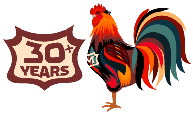

Innovative · Locally-sourced · Passionate
Welcome to Margaux's
The perfect fusion
High-energy metropolis & soulful Southern hospitality
Since its inception more than 30 years ago, Margaux's Restaurant in Raleigh, NC has strived to create a dining experience like no other. We know that a truly memorable event happens when a guest's needs are anticipated and met, resulting in complete satisfaction. We believe our outstanding team has succeeded in making Margaux's one of the premier Raleigh dinner restaurants; and the dining destination it was meant to be.
The backstory
A superb eatery and one of the top local restaurants in Raleigh, NC, Margaux's Restaurant first opened its doors in 1992. The venue was established by co-owner Steve Horowitz and his brother-in-law Richard Hege, with the aim of creating a comfortable, stylish atmosphere for diners and a tight-knit, personal environment for employees.
Four years later, Chef Andrew Pettifer moved to North Carolina and joined Margaux's staff as Chef de Cuisine, and transformed Margaux's menu from strictly French to a delightful fusion of French, Southern and Asian cuisines. Since then, Margaux's has become one of the top Raleigh dinner restaurants and a venue where guests like to stay awhile, dining on delicious, rich cuisine that changes daily.
Guests can meet Pettifer and his staff of six chefs over the counter of Margaux's open kitchen to discuss politics or to request a special dish for the evening. The restaurant focuses on serving only the freshest produce from our local purveyors. For that perfect cocktail; we offer an array of spice-infused syrups and blends for an amazing libation.
The vibe
At Margaux's, you'll find an ever-changing menu, a flair for impeccable service, and an energetic ambiance with progressive décor. The result is the flawless dining experience we have become known for over 30 years. We call it the Perfect Fusion of a High-Energy Metropolis and Soulful Southern Hospitality.

House rules